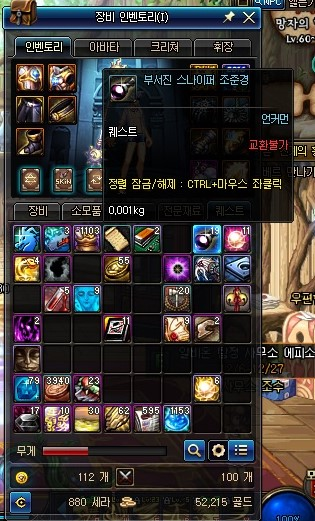
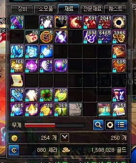
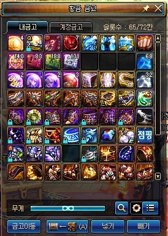
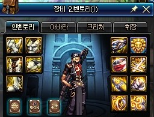
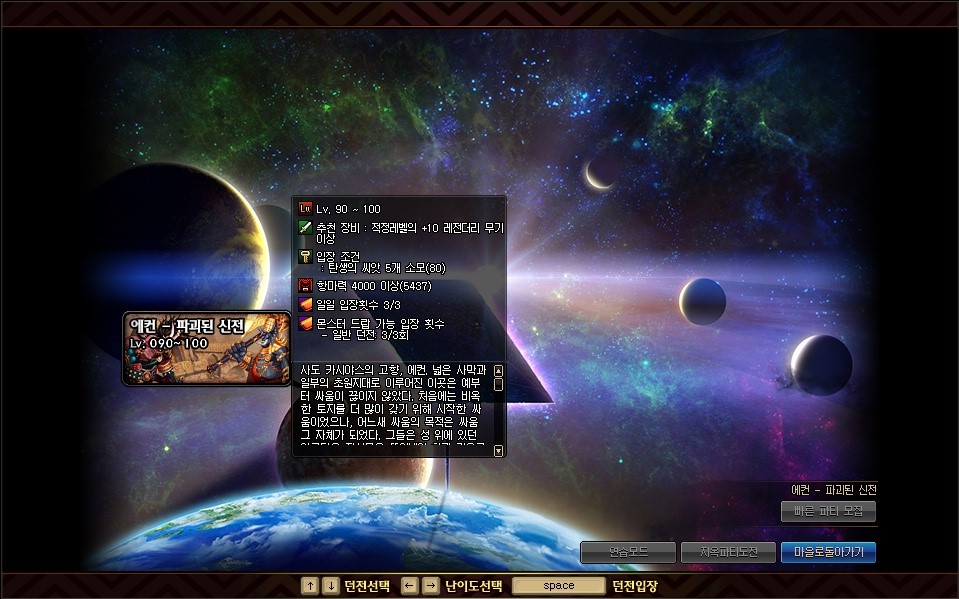
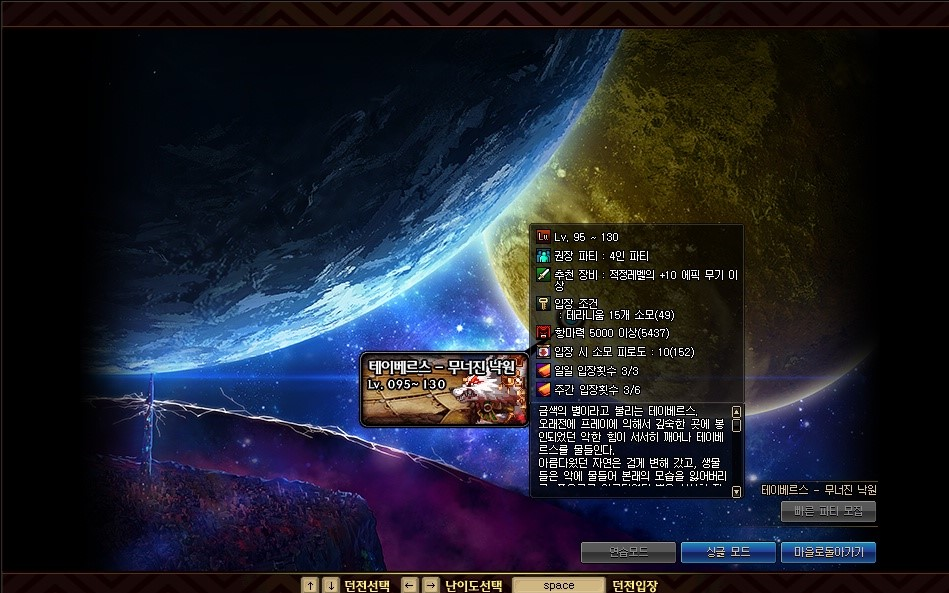
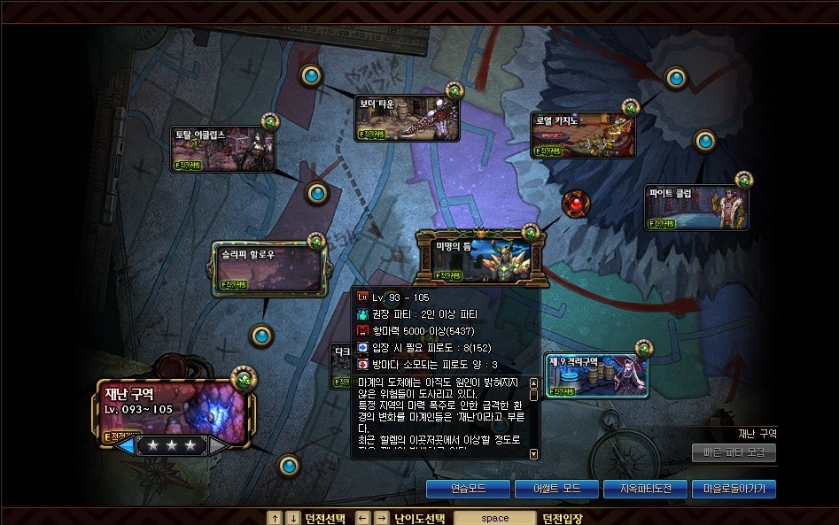

파밍 던전이란?


강한 장비를 얻으러 가는 던전
RPG의 꽃
강한 몬스터를 잡아서 재료및 장비를 얻고 점점 성장하는 RPG게임!!
그러기 위해서 가는 파밍던전!!
던전앤파이터의 파밍던전에 대해 가볍게 훑어보자!!


차원의 틈

차원의 틈 - 이계의 강자
가성비 최고의 던전
모든 모험가가 거쳐가는 스위칭의 성지
이젠 단기간 내에 레전더리 파밍도 가능
난이도 : 매우 쉬움
추천 레벨 : LV 85
입장 제한 : 하루 5번
입장 재료 : 끝없는 영원 5개
획득 가능 장비 : 크로니클 장비 / 퀘스트 레전더리 장비 / 차원의 조각 / 고대의 조각 / 황금 큐브
전설 던전

에컨 - 파괴된 신전
보주도 장비도 타 던전 입장권도 주는 만능 던전
차원의 틈과 다르게 귀걸이도 드랍
자신의 직업과 딜 타입과 직업에 따라 3가지의 장비 선택 가능
꾸준히 가면 손해볼꺼없는 예금형 던전
난이도 : 보통
추천 레벨 : LV 90
입장 제한 : 하루 일반 던전 3번 / 히든 던전 1번
입장 재료 : 탄생의 씨앗 5개
획득 가능 장비 : 다르마의 상징 / 귀면족의 뿔 / 에컨 레전더리 장비

테이베르스 - 무너진 낙원
현재 던파의 최종던전
최강의 장비가 당신을 기다리고있습니다
디양한 패턴과 즉사기로 파티원간의 호흡과 패턴 숙지가 필요한 던전
그럼에도 불구하고 3주만에 최종 무기를 주는 혜자 그 자체의 던전
난이도 : 매우 어려움
추천 레벨 : LV 95
입장 제한 : 하루 3번 / 일주일 2번 (총 6번)
입장 재료 : 테라니움 15개
획득 가능 장비 : 균열 탐지석/ 균열 반응석 / 천공의 카드첩 / 테라니움 / 천공의 조각 / 하늘의 염원 /테이베르스 에픽 장비

틈 시리즈

시공의 틈
빠르게 지옥파티를 클리어 가능
찜빔으로 소원빌기(?)도 가능
일반 지옥파티보다 더 많은 조각 수급량
각 지역마다 있으며 각 지역의 던전이 랜덤으로 등장
시간대비 수급이 많은 던전
난이도 : 쉬움
추천 레벨 : LV 75 ~ 90
입장 제한 : 없음
입장 재료 : 지옥파티 초대장 27 ~ 30 장
획득 가능 장비 : 에픽 조각 / 에픽 장비

마계의 틈
초대장 없이 들어가는 지옥파티
네임드 몬스터를 죽이면 에픽 드랍확률 UP
추억의 보스 패턴 시전(?)
어디서 본 듯한 익숙한 몬스터 친구들 ㅎ
초대장 없이 높은 확률로 에픽이 나오는 그야말로 "혜자의 틈"
난이도 : 보통
추천 레벨 : LV 90
입장 제한 : 하루 3번
입장 재료 : 정제된 테라니움 2개
획득 가능 장비 : 에픽 조각/ 에픽 장비

미명의 틈
할렘이 혜자인 이유 그 자체
여기서 에픽이 안 나와도 10일만 돌면 뚝딱
어디서 본 듯한 익숙한 친구들 ㅎ(2)
예전엔 마틈이 꿀이였다면 현재 꿀은 바로 이곳
난이도 : 어려움
추천 레벨 : LV 95
입장 제한 : 하루 3번
입장 재료 : 탄생의 씨앗 20개
획득 가능 장비 : 이형의 파편 / 이형 결정체 / 할렘 에픽 장비
탑 시리즈

절망의 탑
이름보고 절망할 필요 없음
이거 깰라고 한층 한층 무기 바꾸던 시절도 있었지만......
현재 만렙이 95레벨인 이 시점에 갈 가치가 더 이상 없는 던전
난이도 : 쉬움
추천 레벨 : LV 85
입장 제한 : 하루 1번
입장 재료 : 없음
획득 가능 장비 : 85레벨 장비 / (100층 도달시)절망의 탑 정복 ==> 75 ~ 85레벨 랜덤 에픽 무기 / 65 ~ 85 보조장비 항아리 / 65 ~ 85 마법석 항아리

비탄의 탑
비탄의 탑에 이어 나온 무기파밍 던전
실제 유저들의 모습을 가져온 특별한 던전
몬스터 피통이 조금 많음
현재 만렙이 95인 시점에 절망의 탑과 더불어 갈 이유가 없는 던전
난이도 : 보통
추천 레벨 : LV 90
입장 제한 : 하루 1번
입장 재료 : 없음
획득 가능 장비 : 천년의 한걸음 / 천년의 세월 ==> 85 ~ 90 에픽 무기 랜덤 항아리 / 레전더리 ~ 에픽 귀걸이 항아리
마수 던전

디렉터 최대 실수
당시엔 깨라고 만든것인지 의문이 돌 정도로 여론이 안 좋았음
허나 종결 스펙을 위해선 반드시 거쳐야하는 던전
패턴 하나하나가 죄다 즉사
파티원 전체가 숙련된 플레이를 요구하는 던전
난이도 : 매우 어려움
추천 레벨 : LV 90
입장 제한 : 하루 3번 / 일주일 2번 (총 6번)
입장 재료 : 마수 조사 의뢰서
획득 가능 장비 : 신종의 흔적 / 개척의 증표
재난 구역

최고의 광부 던전
단기간내에 어마어마한 보상과 경험치 획득 가능
허나 그에 걸맞는 높은 스펙이 요구
던파하는 모든 사람이 거쳐가는 최고의 수급지
난이도 : 어려움
추천 레벨 : LV 95
입장 제한 : 없음
입장 재료 : 없음
획득 가능 장비 : 난이도 별로(검게 오염된 기운 / 이형의 파편 / 하늘의 염원) / 테라니움
어썰트 모드

할렘 에픽의 토대인 할렘 레전더리의 파밍 던전
단기간내에 전부위 파밍 가능
어마어마하게 쉬운 난이도
재료 대량 드랍에 레전더리까지 빠르게 파밍이 끝나는 던전
난이도 : 쉬움
추천 레벨 : LV 95
입장 제한 : 하루 일반 3번 / 히든 1번
입장 재료 : 탄생의 씨앗 10개
획득 가능 장비 : 검게 오염된 기운 / 영웅의 징표 / 할렘 레전더리
제국 투기장

고스펙 캐릭터를 2개나 필요한게 입장 조건
매일매일 바뀌는 약점속성과 몬스터 순서
레이드를 안가고 레이드 장비 파밍 가능
제국 모놀 만들어주세요 제발
난이도 : 어려움
추천 레벨 : LV 90
입장 제한 : 없음 (총 6번)
입장 재료 : 150,000 골드
획득 가능 장비 : 데 로스 제국 훈장 , 이면의 표식